Практична робота 5.1
За таблицею з відомостями про закупівлі товарів від різних фірм-постачальників вам потрібно:
- визначити середню закупівельну ціну та загальний обсяг закупленого товару від кожної фірми-постачальника;
- відобразити інформацію про п’ять закупівель найбільшого обсягу;
- відобразити інформацію лишу про ті закупівлі напоїв, що здійснювалися в період між 01.02.2009 та 01.06.2009;
- вивести дані про закупівлі, що здійснювалися до 1.02.2009 або залишок від яких становить менше 10 шт.;
- вивести інформацію про закупівлі товарів, обсяг яких менший за середній обсяг закупівлі;
- визначити середній залишок та максимальну закупівельну ціну кожного товару та забезпечити можливість фільтрації товарів за фірмами-постачальниками.
Хід виконання
- Відкрийте файл Практ_5_1.xlsx з архіву заготовок або самостійно створіть таблицю, зображену на рис. 5.51. Кожне завдання практичної роботи ви виконуватимете на окремому аркуші, тому створіть п’ять копій аркуша Аркуш1 і назвіть їх Аркуш2, Аркуш3, …, Аркуш6.
- На аркуші 1 за допомогою засобу обчислення проміжних підсумків визначте середню закупівельну ціну та загальний обсяг закупок товару від кожної фірми-постачальника.
- Щоб записи про закупки від однієї фірми-постачальника розміщувалися поряд, таблицю потрібно відсортувати за назвами фірм. Для цього виділіть всю таблицю, виконайте команду Дані
 Сортування, у вікні Сортування діапазону встановіть перемикач Діапазон даних у положення з рядком заголовка та виберіть зі списку Сортувати за значенням Фірма. Коли ви клацнете кнопку ОК, порядок рядків у таблиці буде змінено: зверху розміщуватимуться рядки з інформацією про закупівлю товарів від фірми «Антей», потім – від фірми «Марс», а потім – від фірми «Орфей».
Сортування, у вікні Сортування діапазону встановіть перемикач Діапазон даних у положення з рядком заголовка та виберіть зі списку Сортувати за значенням Фірма. Коли ви клацнете кнопку ОК, порядок рядків у таблиці буде змінено: зверху розміщуватимуться рядки з інформацією про закупівлю товарів від фірми «Антей», потім – від фірми «Марс», а потім – від фірми «Орфей». - Виконайте команду Дані Підсумки та виберіть у вікні Проміжні підсумки параметри, зазначені на рис. 5.52 (після кожної зміни значень у стовпці Фірма має обчислюватися середня закупівельна ціна). Коли ви клацнете кнопку ОК, буде обчислено три середніх значення закупівельної ціни товарів від кожної з фірм.
- Для обчислення сумарного обсягу закупок товарів від кожної фірми-постачальника ще раз виконайте команду Дані Підсумки і самостійно задайте необхідні параметри у вікні Проміжні підсумки. Щоб значення сумарного обсягу закупок не «затирали» значення середньої закупівельної ціни, не забудьте зняти прапорець Замінити поточні підсумки. Якого вигляду після цього набуде таблиця, показано на рис. 5.53.
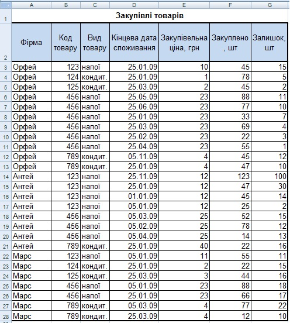
Рис. 5.51. Відомості про закупівлі товарів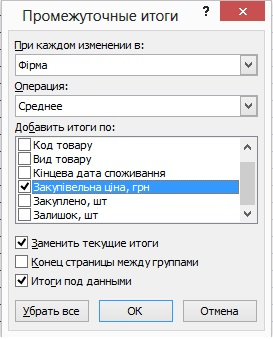
Рис. 5.52. Визначення параметрів проміжних підсумків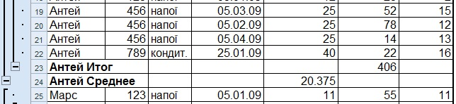
Рис. 5.53. Проміжні підсумки - Щоб записи про закупки від однієї фірми-постачальника розміщувалися поряд, таблицю потрібно відсортувати за назвами фірм. Для цього виділіть всю таблицю, виконайте команду Дані
- Щоб відобразити інформацію про п’ять закупівель найбільшого обсягу, використайте автофільтр.
- Перейдіть на Аркуш2, виділіть усю таблицю та виконайте команду Дані Фільтр Автофільтр. На заголовках стовпців таблиці (А2:G2) відобразяться кнопки
 . клацніть кнопку в полі Закуплено та виберіть у списку пункт (Перші 10…).
. клацніть кнопку в полі Закуплено та виберіть у списку пункт (Перші 10…). - У вікні Автофільтр для добору найкращої десятки задайте відображення п’яти елементів списку із найбільшими значеннями та клацніть кнопку ОК. У результаті таблиця набуде такого вигляду, як на рис. 5.54.
- Перейдіть на Аркуш2, виділіть усю таблицю та виконайте команду Дані
- Для відображення даних про закупівлі напоїв, що здійснювалися в період між 01.02.2009 та 01.06.2009, можна застосувати автофільтр, оскільки умови, які накладаються на різні стовпці, з’єднані сполучником «і»: «вид товару напої ї дата закупівлі між 01.02.2009 та 01.06.2009».
- Перейдіть на Аркуш3, виділіть усю таблицю та виконайте команду Дані Фільтр Автофільтр.
- Клацніть кнопку на заголовку Вид товару та оберіть із розкривного списку значення напої, а для поля Дата закупівлі виберіть (Умова) і встановіть подвійну умову, використовуючи логічну операцію «і»: більше або дорівнює 01.02.2009 і менше або дорівнює 01.06.2009. результат, який ви маєте отримати, наведено на рис. 5.55.
- Перейдіть на Аркуш3, виділіть усю таблицю та виконайте команду Дані
- Для виведення даних про закупівлі, що здійснювалися до 1.02.2009 або залишок від яких становить менше 10 шт., слід застосувати розширений фільтр, оскільки умови, що стосуються різних стовпців, з’єднані сполучником «або».
- Перейдіть на Аркуш4 та праворуч від таблиці створіть діапазон умов (рис. 5.56, а). значення, що стосується дати закупівлі та залишку товару, слід записати в різних рядках – саме так реалізується з’єднання умов сполучником «або».
- Виконайте команду Дані Фільтр Розширений фільтр, у вікні Розширений фільтр введіть адреси вихідного діапазону (усієї таблиці) та діапазону умов (рис. 5.56, б) і клацніть кнопку ОК. На екран буде виведено таблицю, подібну до наведеної на рис. 5.57.
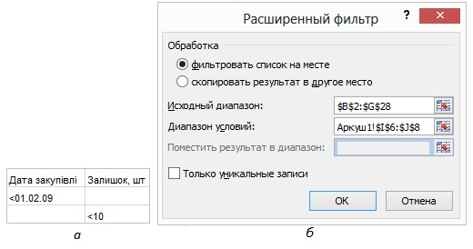
Рис. 5.56. Розширений фільтр: а – діапазон умов фільтрації; б – вікно визначення параметрів фільтрації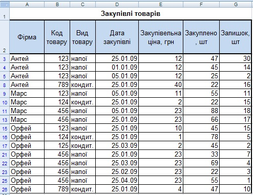
Рис. 5.57. Результат застосування розширеного фільтра - Для відображення інформації про товари, обсяг яких менший за середній обсяг закупівлі всіх товарів, застосовуємо розширений фільтр.
- a) Перейдіть на Аркуш5 та створіть критерій відбору рядків. У перший його рядок скопіюйте заголовок стовпця Закуплено, а в другий введіть формулу для отримання виразу на кшталт <S (де S – середній обсяг закупівлі) = “<”&AVERAGE(Е3:Е30). У цій формулі ми з’єднуємо символ «<» з результатом функції, що обчислює середнє значення в діапазоні Е3:Е30. Якщо формулу введено правильно, критерій повинен мати такий вигляд, як на рис. 5.58.
- Відфільтруйте таблицю, виконавши команду Дані Фільтр Розширений фільтр. Задайте як вихідний діапазон усю таблицю, а як діапазон умов – щойно створений критерій. У результаті має відобразитися інформація лише про ті закупівлі, обсяг яких менше від середнього обсягу.
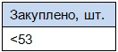
Рис. 5.58. Критерій відбору - Для визначення середнього залишку та максимальної закупівельної ціни кожного товару, а також для забезпечення можливості фільтрації закупівель за фірмами-постачальниками найкраще скористатися зведеною таблицею.
- Перейдіть на Аркуш6, виділіть усю таблицю, виконайте команду Вставлення Таблиці Зведена таблиця і в першому вікні майстра клацніть кнопку Готово.
- Буде створено новий аркуш з макетом зведеної таблиці. Перетягніть поля у відповідні області макету (рис. 5.59):
- Оскільки фільтрація має відбуватися за фірмами-постачальниками, перетягніть поле Фірма в область сторінок;
- Поле Вид товару перетягніть в область рядків, адже потрібно обчислювати певну характеристику для кожного виду товару;
- А оскільки потрібно обчислювати середній залишок та максимальну закупівельну ціну, поля Закупівельна ціна та Залишок перетягніть в область даних.
- За умовчанням будуть обчислюватися сумарні залишки та закупівельні ціни. Для того щоб розрахувати середній залишок, виділіть клітинку Сума за полем Залишок, клацніть кнопку
 (Параметри поля) на панелі інструментів Зведені таблиці і у вікні Поле зведеної таблиці виберіть значення Середнє (рис. 5.60).
(Параметри поля) на панелі інструментів Зведені таблиці і у вікні Поле зведеної таблиці виберіть значення Середнє (рис. 5.60). - Так само задайте обчислення максимальних закупівельних цін. Якого вигляду цього разу набуде таблиця, показано на рис. 5.61. Вибираючи певні значення за допомогою кнопки праворуч від поля Фірма, ви можете відобразити інформацію лише про закупівлі від певних фірм. Збережіть електронну книгу.
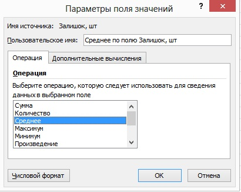
Рис. 5.59. Створення макету зведеної таблиці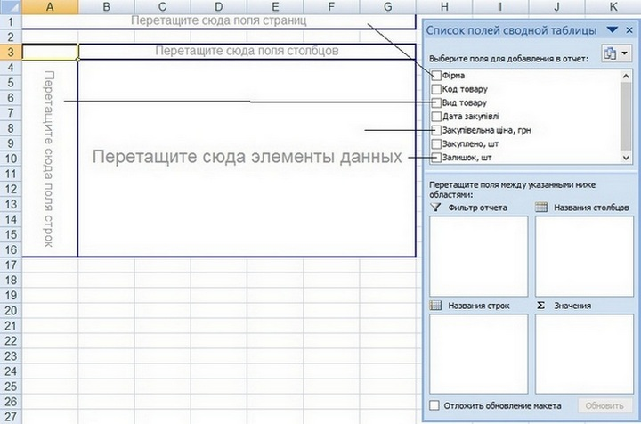
Рис. 5.60. Вибір функції визначення середнього значення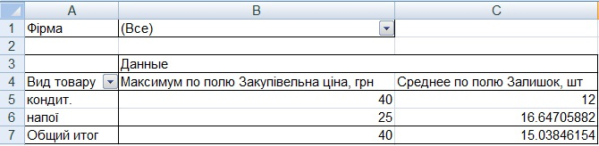
Рис. 5.61. Зведена таблиця - Перейдіть на Аркуш6, виділіть усю таблицю, виконайте команду Вставлення
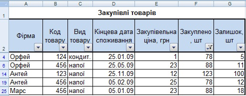
Рис. 5.54. Відображення відомостей про п’ять закупівель найбільшого обсягу
Рис. 5.54. Відображення відомостей про п’ять закупівель найбільшого обсягу
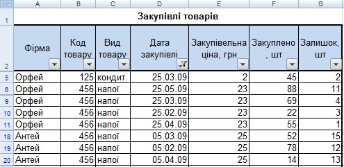
Рис. 5.55. Відображення відомостей про закупівлі напоїв, що здійснювалися в період між 01.02.2009 та 01.06.2009
Рис. 5.55. Відображення відомостей про закупівлі напоїв, що здійснювалися в період між 01.02.2009 та 01.06.2009